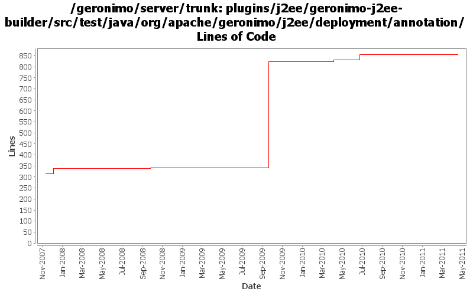

[root]/plugins/j2ee/geronimo-j2ee-builder/src/test/java/org/apache/geronimo/j2ee/deployment/annotation

| Author | Changes | Lines of Code | Lines per Change |
|---|---|---|---|
| Totals | 28 (100.0%) | 670 (100.0%) | 23.9 |
| djencks | 16 (57.1%) | 609 (90.9%) | 38.0 |
| gawor | 9 (32.1%) | 46 (6.9%) | 5.1 |
| xuhaihong | 3 (10.7%) | 15 (2.2%) | 5.0 |
GERONIMO-5905 GERONIMO-5906 GERONIMO-5907 Add WebServiceFeature annotation support for WebServiceClient annotation
13 lines of code changed in 2 files:
XBEAN-162 update to genericed xbean-finder apis
6 lines of code changed in 1 file:
cf openejb rev 958340. marshal persistence.xml in the correct namespace, marshal methods names changed
1 lines of code changed in 1 file:
GERONIMO-5190 use openejb-jee jaxb tree for spec dds
79 lines of code changed in 1 file:
GERONIMO-5231: Experimental way to override JVM annotation & jaxws api
15 lines of code changed in 1 file:
GERONIMO-5057 Use those xmlbeans generated by JAVA EE 6 schema files
2 lines of code changed in 1 file:
GERONIMO-4566 don't include jsps, welcome file processing is fixed. Update jetty7 version. Use all the release versions up for vote, so include repos for them. Use snapshot xmlbean-maven-plugin. Make more junit-4 friendly by renaming some test helper classes. Mostly merge of rev 816732 from branches/2.2
523 lines of code changed in 13 files:
fix injection of multiple @EJB objects with the same name, plus better reuse of code (GERONIMO-4210)
6 lines of code changed in 3 files:
sort fields returned by ClassFinder so that list is in the same order across various jdks (GERONIMO-3672)
25 lines of code changed in 1 file:
handlerChains in DD overwrite HandlerChain annotation. Also, simplified HandlerChain processing. (GERONIMO-3598)
0 lines of code changed in 4 files: